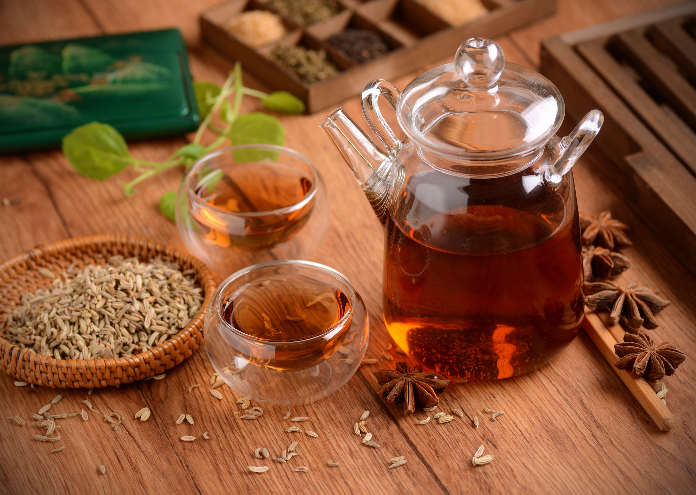
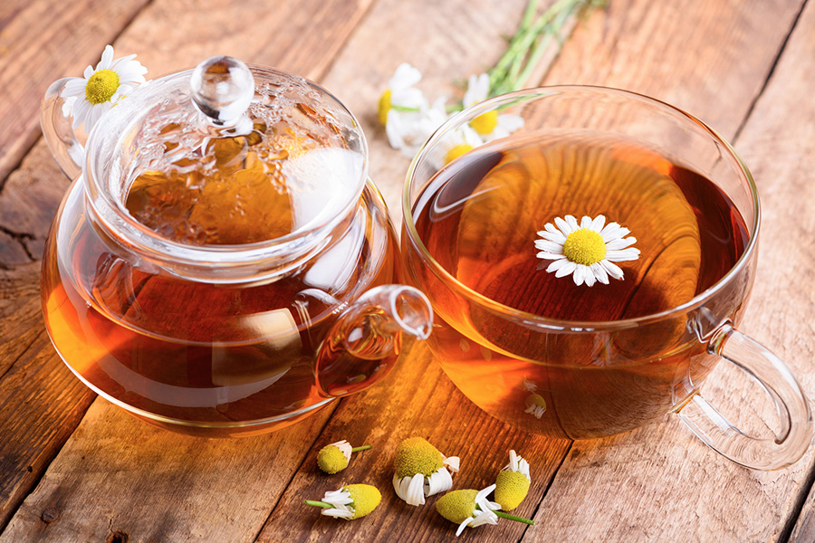
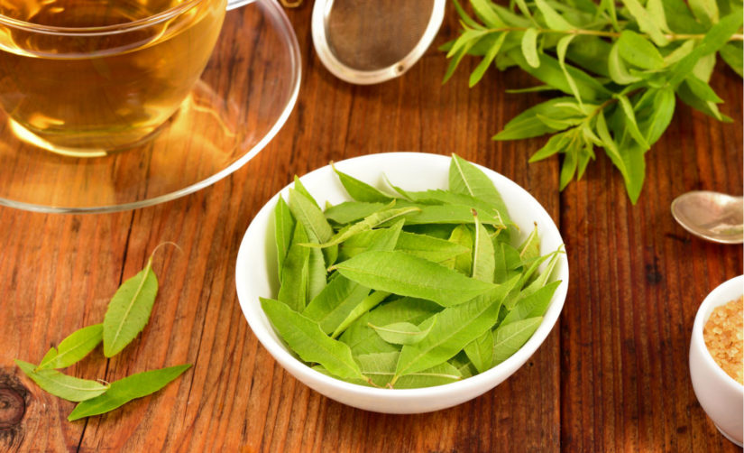

Si tienes grandes dolores de estómago, uno de los mejores remedios naturales son las infusiones de hinojo. Esta planta tiene una función muy clara: evitar la acumulación de gases y facilitar la digestión. Por eso, es recomendable tomar hinojo una vez hayas terminado de comer.
Las infusiones de menta son siempre muy buena opción. Además de aliviar los dolores de estómago, evita el reflujo, los gases, la hinchazón y facilita la digestión. Puedes tomar una justo después de comer y otra antes de dormir. Así te aseguras de que el organismo descansa correctamente.
Si eres propenso a tener cólicos, la infusión de anís es la mejor solución. Evita los cólicos, los gases y ayuda a que el cuerpo se deshinche. Además, puedes tomarlo por la noche, ya que ayuda a conciliar mejor el sueño y luchar contra el insomnio.
Hay muchas comidas realmente deliciosas que pueden provocarte incómodos gases, así como ardores o náuseas. En este caso, las infusiones de jengibre ayudan a aliviar cualquiera de estos síntomas. También es muy recomendada para pasar la gripe. Ayuda a bajar la fiebre y alivia los dolores musculares.
Según diversos estudios, las infusiones de canela son ideales para acelerar el metabolismo y reducir el apetito.
Esta planta favorece la eliminación de líquidos. Si este verano has consumido más sal, has bebido poca agua y te sientes más hinchado, esta infusión te ayudará a eliminar todos los líquidos acumulados.
Están más relacionadas con la digestión, son recomendadas para adelgazar. Esto se debe a que al favorecer la buena digestión después de comer, el vientre se siente más plano rápidamente.
La valeriana es una planta muy recomendada para aquellas personas que tienen problemas de ansiedad. Tiene un efecto sedante que relaja el sistema nervioso y ayuda a descansar al cerebro.
Esta infusión de origen oriental es muy utilizada para conseguir tranquilizarnos y conciliar el sueño. Suele utilizarse mucho para calmar a los adolescentes en época de exámenes.
Tiene muchísimos beneficios para la salud, pero sobre todo es muy famosa por ayudar a combatir el estrés. Si tienes un día demasiado ajetreado, tomar una infusión Omm te ayudará a estar más tranquilo.
Entre sus propiedades destacan las tranquilizantes, por lo que es ideal para combatir los estados de nerviosismo.
